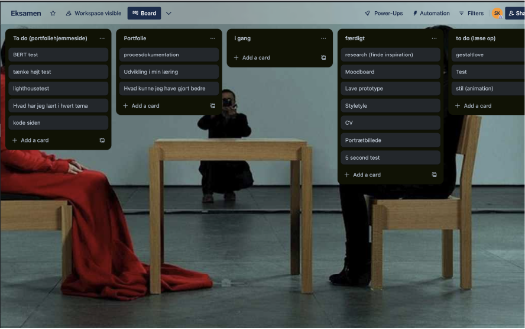
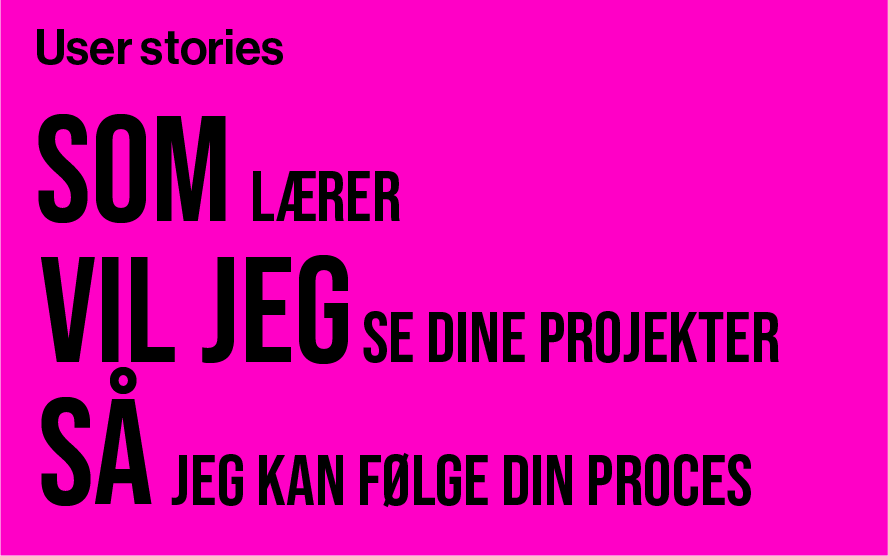
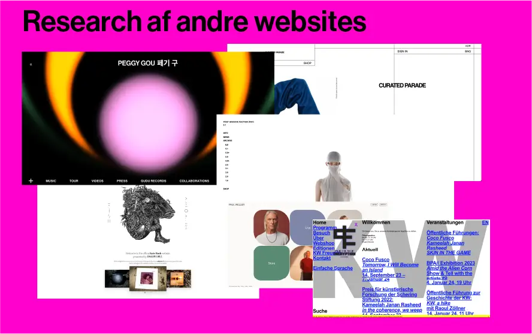
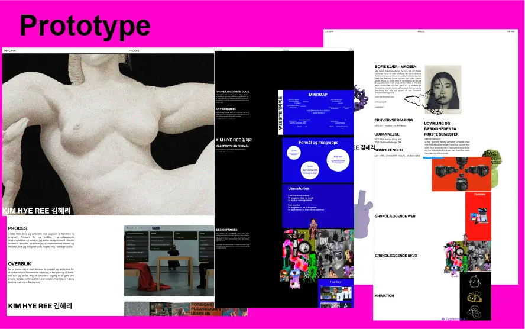
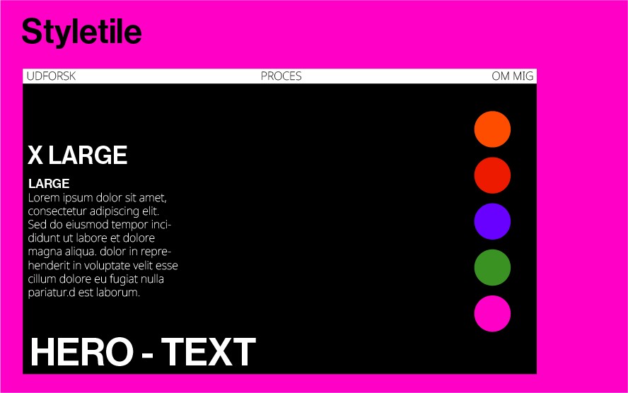
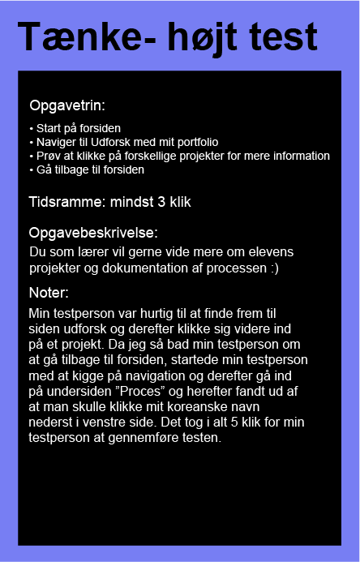

KIM HYE REE 김혜리
PROCES
For at danne mig et overblik over de punkter jeg skulle lave for at skabe mit portfoliowebsite valgte jeg at benytte mig af Trello, som jeg blev introduceret for i tema 5. Med Trello kunne jeg skabe mig en struktureret tilgang til at gøre mit projekt færdig, hvilke punkter jeg mangler, hvad jeg er i gang med og hvad jeg er færdig med
OVERBLIK
For at danne mig et overblik over de punkter jeg skulle lave for at skabe mit portfoliowebsite valgte jeg at benytte mig af Trello, som jeg blev introduceret for i tema 5. Med Trello kunne jeg skabe mig en struktureret tilgang til at gøre mit projekt færdig, hvilke punkter jeg mangler, hvad jeg er i gang med og hvad jeg er færdig med

BRUGERTYPER
Til at starte med undersøgte jeg afsenderen, modtageren og formålet. Her fik jeg et indblik i, hvad der var vigtigt at få inkluderet i mit portfoliowebsite. Mit mål var at skabe en balance så det både afspejler min personlighed i designet og samtidig har det vigtige indhold til mine lærere som modtagere.


MOODBOARD
Jeg startede med at lave et moodboard om mig selv, da jeg mente det gav mening da websitet skulle afspejle mig og min personlighed.

RESEARCH
Efter jeg havde lavet et moodboard startede jeg med at researche på forskellige websites som jeg synes var flotte. Jeg dykkede også ned i Sydkoreanske brands for at få en indsigt i mulige kulturelle tendenser.

PROTOTYPE
Udfra mit moodboard, analyse af brugertyper og research af hjemmesider, begyndte jeg at udvikle min prototype i Figma.
DESIGNSTIL
Jeg har valgt at bryde konventionerne i det at jeg udfordrer loven om nærhed ved at skabe et mellemrum mellem billeder og tekst. Men samtidig holder det loven om kontinuitet da den tilhørende tekst til billedet står på samme linje og dermed bevare en visuel forbindelse mellem billede og tekst.

STYLETYLE
Mit design er kontrastfyldt med den sorte og hvide farve. Til mine overskrifter har jeg brugt fonten Neue Haas. Med sit sans - serif design tilføjer det en moderne æstetisk til mit design og ved at alle overskrifter er skrevet med store bogstaver er med til af fange brugerens opmærksomhed. Med min brødtekst har jeg valgt at gå med fonten Noto Sans som også er sans - serif. Dette er med til at gøre min brødtekst læsbar. Sammen skaber fonten en kontrast som fremhæver overskrifterne. Samtidig bevarer jeg sans-serif karakteren som er med til at skabe en visuel sammenhæng.

5 SECOND TEST
For at få feedback på mit moodboard og prototype lavede jeg en 5 second test og sendte ud til venner og familie. Jeg tænkte at det ville være en god ide til sidst at kunne sammenligne om moodboardet om mig afspejlede sig i mit design i prototypen. Både ord som "artsy", "farverig", "rå" og "kreativ"går igen i begge test. Stemningen er konsistent med et "alternativt," "ungt" og "punk" udtryk.
TÆNKE HØJT TEST
